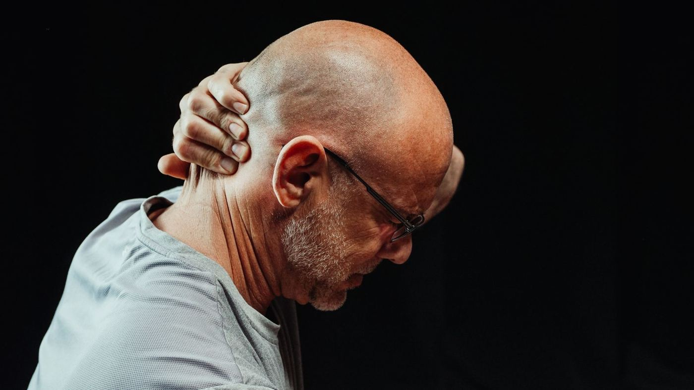

The Scene vs. the Days After
A patient comes in three days after a rear-end collision. At the scene, they felt shaken but otherwise fine. They declined emergency services, drove home, and went to bed that night without significant discomfort. By the following morning, they had a stiff neck. By day three, they were experiencing a persistent headache, difficulty turning to look over their shoulder, and unexpected fatigue.
This pattern — feeling relatively unaffected immediately after a crash, then developing progressively worsening symptoms over the following days — is one of the most consistent findings in the whiplash literature. It is not unusual or unexplained. It has well-documented physiological mechanisms, and understanding those mechanisms matters both for patients trying to make sense of their experience and for clinicians making documentation and treatment decisions.
Adrenaline and the Acute Stress Response
Within seconds of a collision, the body activates its acute stress response. The hypothalamic-pituitary-adrenal axis and the sympathetic nervous system initiate a cascade of hormonal and neurochemical changes designed to prepare the organism for immediate survival: cortisol, epinephrine, and norepinephrine are released rapidly, blood is redirected to large muscle groups, and pain perception is acutely modulated.
The endogenous opioid system also activates in response to acute physical and psychological stress. Endorphins, enkephalins, and dynorphins bind to opioid receptors throughout the central and peripheral nervous systems, producing an analgesic effect that can significantly blunt the perception of pain in the immediate aftermath of trauma. This is the same mechanism that allows soldiers to remain functional after serious battlefield injuries — the body's capacity to suppress pain when survival demands it is powerful and real.
Key point: The absence of significant pain at the accident scene does not indicate the absence of injury. It reflects the body's acute neurochemical response to a high-stress event — a response that subsides over the hours and days that follow.
As the acute stress response normalizes over the hours following the accident, the neurochemical suppression of pain lifts. The underlying tissue changes — which were present from the moment of impact — become perceptible. For many patients, this is when they first notice that something is wrong.
The Inflammatory Cascade: 24 to 72 Hours
Injury to soft tissue — ligaments, muscles, joint capsules, disc annuli — initiates a predictable inflammatory response. This is not pathological; it is the first phase of the body's repair process. Immediately following tissue damage, inflammatory mediators including prostaglandins, bradykinin, histamine, and substance P are released at the injury site. These chemicals serve multiple purposes: they increase local blood flow to bring repair cells to the area, they signal local immune cells to begin clearing damaged tissue, and — importantly — they sensitize peripheral nociceptors (pain receptors).
The peripheral sensitization produced by inflammatory mediators lowers the activation threshold of pain receptors — they become more responsive to stimuli that would not normally produce pain. This is why the neck that felt fine on the evening of the accident feels acutely tender when touched two days later. The injury existed from the moment of impact; the body's capacity to perceive it has changed.
Central Sensitization: The Nervous System's Amplification
Beyond the local inflammatory process, significant soft tissue trauma can contribute to a phenomenon known as central sensitization — a neuroplastic change in how the central nervous system processes pain signals. Under normal circumstances, pain is roughly proportional to the degree of tissue damage. Central sensitization disrupts this proportionality: the nervous system begins amplifying incoming signals, producing pain that is more intense, more widespread, and more persistent than the underlying tissue state would predict.
Central sensitization involves changes at multiple levels of the nervous system, including increased excitability of dorsal horn neurons in the spinal cord (a process called wind-up), downregulation of descending inhibitory pathways, and alterations in the brain's processing of nociceptive input. Once established, central sensitization can maintain a chronic pain state even after the original peripheral tissue injury has substantially healed.
The significance of this for post-accident care is that early and adequate management of acute cervical pain may reduce the likelihood that central sensitization becomes a dominant feature of the patient's clinical picture. Inadequately managed acute pain in the days and weeks following injury is associated with higher rates of chronic pain development. This is one of the clinical arguments for early evaluation and treatment rather than a "wait and see" approach.
Disc and Ligament Injury: Why Structural Damage Can Be Silent at First
Ligaments contain mechanoreceptors and nociceptors, but the density of pain-sensitive nerve fibers varies across ligamentous structures. Some cervical ligaments are relatively sparsely innervated, which means that partial tears or significant stretch injuries to those structures may not immediately generate strong pain signals. The pain associated with ligamentous injury often correlates more with the downstream effects — joint instability, altered movement patterns, secondary muscle tension and guarding — than with direct nociception from the ligament itself.
Disc injuries follow a similar pattern. The outer third of the annulus fibrosus is innervated, but the inner annular layers and the nucleus pulposus are not. A circumferential annular fissure that does not immediately press on a nerve root may produce little pain initially, even as the structural integrity of the disc has been compromised. If the disc subsequently herniates — a process that can occur weeks or months after the initial injury — the resulting radicular symptoms may appear to have arisen de novo, disconnected from the accident, unless careful clinical history and imaging are used to establish the timeline.
Sleep Disruption and Delayed Cognitive Symptoms
A subset of patients who sustain significant cervical trauma develop cognitive symptoms — difficulty concentrating, reduced processing speed, word-finding problems — that often emerge several days to weeks after the injury rather than immediately. This constellation, sometimes referred to as post-traumatic cognitive dysfunction or a component of postconcussive symptomatology (depending on whether there was head contact or acceleration forces sufficient to affect the brain), can be disorienting for patients who were not initially aware of any head involvement.
Sleep disturbance is both a common early symptom of cervical trauma — pain disrupts normal sleep architecture — and a contributor to cognitive symptoms. Poor sleep impairs working memory, sustained attention, and executive function. A patient who is sleeping four interrupted hours per night because neck pain wakes them at every position change will often report cognitive symptoms that are, at least in part, a downstream consequence of sleep deprivation rather than direct neurological injury.
Pain itself, particularly when persistent and associated with anxiety about the cause and prognosis of an injury, also activates the stress response chronically, with associated effects on hippocampal function and memory consolidation. The interplay of pain, sleep disruption, and psychological stress following a significant accident creates a clinical picture that is more complex than any single symptom in isolation.
Why Early Documentation Matters Even When Symptoms Are Mild
From a clinical standpoint, the period immediately following a motor vehicle accident is the most important window for establishing an accurate baseline. Even mild symptoms documented within days of an accident — subtle cervical stiffness, a mild headache, slight achiness in the shoulders — become clinically meaningful if those symptoms progress. Without an early clinical record, reconstruction of the injury timeline depends on patient recall, which is inherently less reliable than contemporaneous documentation.
Early evaluation also allows appropriate diagnostic imaging to be ordered when indicated. If imaging is deferred until symptoms become severe weeks later, the clinical picture is harder to interpret, and some findings may be attributed to degenerative changes or preexisting conditions rather than to the trauma event.
When to Seek Evaluation After a Motor Vehicle Accident
Given what the research tells us about delayed symptom onset, the appropriate threshold for evaluation is a meaningful collision — not the presence of severe symptoms. A rear-end impact sufficient to cause vehicle damage, particularly one in which the occupant was not braced and did not anticipate the impact, warrants clinical evaluation within the first several days regardless of initial symptom severity.
Symptoms that specifically warrant prompt evaluation include: new neck pain or stiffness developing within a week of an accident; headaches originating at the base of the skull or radiating from the neck; numbness, tingling, or weakness in the arms or hands; dizziness or visual disturbance following the accident; and any cognitive changes including difficulty concentrating or unusual fatigue. These presentations have known anatomical correlates and should be evaluated by a clinician with appropriate training in cervical trauma assessment.